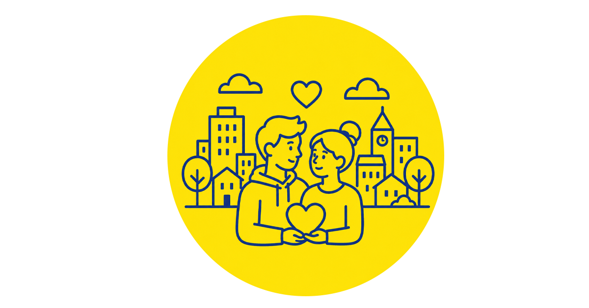
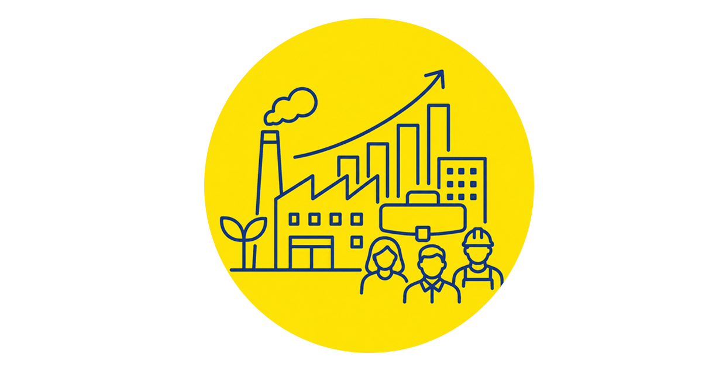
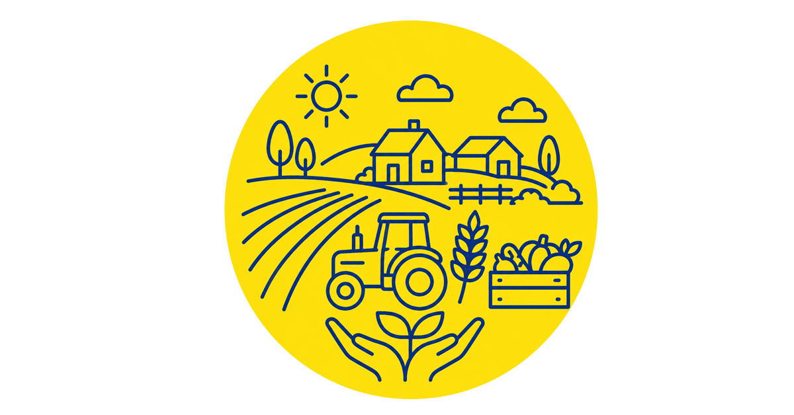
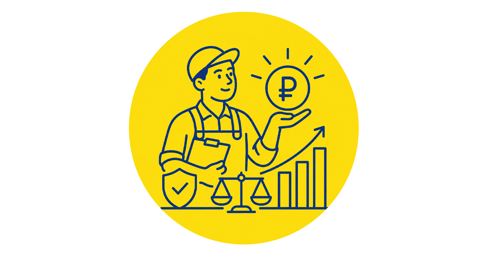
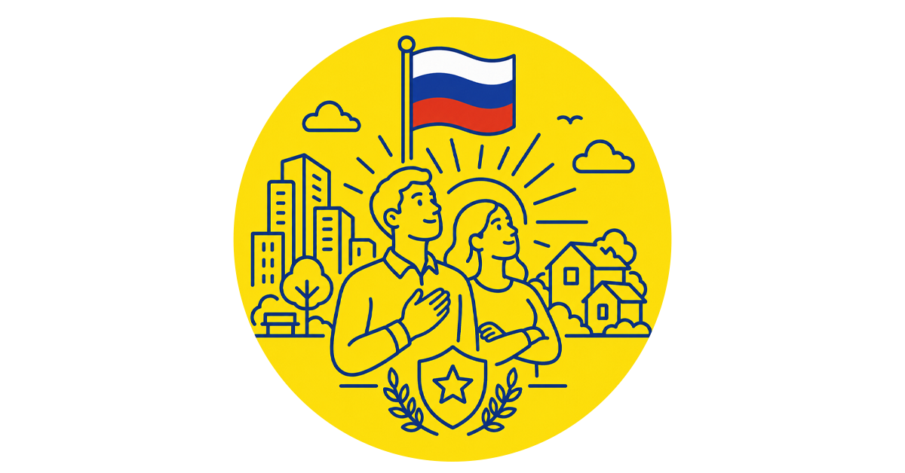

Отставание в экономике
Печальная динамика ВВП: последние двадцать лет темп роста ВВП России составляет в среднем 2% в год.
|
Нам нужна страна, где своё дело и работа дают счастливую и безбедную жизнь, где мы можем строить планы на будущее, а мечты сбываются у всех, кто честно трудится и созидает.

Чтобы молодёжь оставалась в родных городах и создавала семьи.
Чтобы предприятия росли и появлялись новые рабочие места.
Чтобы сёла развивались, а земля приносила урожай и достаток.
Чтобы труд приносил справедливый доход.
Чтобы мы гордились своим качеством и уровнем жизни.Мы знаем, как этого добиться! Новая индустриализация — реальный план развития экономики России.
Поддержать программу02 · Сегодня
Печальная динамика ВВП: последние двадцать лет темп роста ВВП России составляет в среднем 2% в год.
Большую часть необходимой продукции и технологий приходится закупать за рубежом: в 2025 году экспорт машин и оборудования составил $23,4 млрд, импорт — $147,1 млрд.
Люди уезжают туда, где есть работа и возможности: по данным Росстата, в ряде регионов население сокращается на 1–2% в год, а в наиболее проблемных территориях — на 5–10%.
Сельское хозяйство теряет производственный потенциал: около 19,4 млн га неиспользуемой пашни, по данным Правительства.
Эти проблемы связаны между собой. Если в регионе нет производства — нет работы. Если нет работы — люди уезжают. Если производство не развивается — не растут доходы и технологические возможности страны.
30 лет назад нам сказали: «Продавай сырьё, дружи с Западом, не строй заводы». Мы до сих пор так и делаем. Но Запад нам больше не друг, а заводов у нас нет. Правила старые — мир новый. Пора включать голову и менять правила.
Замкнутый круг: боремся с инфляцией — убиваем производство — создаём новую инфляцию.
Проблема не в том, что у России нет ресурсов и возможностей для развития. Проблема в правилах, по которым работает экономика. Люди производят ВВП, но живут хуже всех, их голос не слышен, и они не в силах изменить ситуацию. Новая индустриализация — это справедливое отношение ко всем людям дела и труда.
Новая индустриализация — это экономика, в которой выгодно производить, инвестировать и работать. Её основа — три «кита»: мягкая денежно-кредитная политика, стимулирующая налоговая система и разумный протекционизм. Вместе они создадут условия для роста производства, появления новых предприятий и рабочих мест, развития регионов и повышения доходов людей.
Доступные деньги для развития производства и инвестиций.
Налоги должны создавать условия для роста производства и доходов людей.
Условия, при которых российские производители могут развиваться и конкурировать.
Новая индустриализация
Предприятия будут развиваться, а не закрываться.
Не миллионы курьеров и охранников, а инженеры, рабочие и создатели.
Рост производства должен означать рост доходов людей.
Не работа ради выживания, а зарплата, на которую можно жить, растить детей и строить планы на будущее.
Россия будет создавать собственные технологии и оборудование.
Не покупать готовое за рубежом, а разрабатывать и производить своё.
В городах и сёлах появятся работа, производство и возможности для развития.
Не отток людей в Москву и крупные города, а возможность хорошо жить и работать у себя дома.
Кредиты и налоги должны помогать развитию, а не тормозить его.
Не деньги под неподъёмный процент и налоги, которые душат производство, а условия для роста и инвестиций.
Российский производитель получит условия для развития.
Не зависимость от импорта, а свои станки, автомобили, оборудование, лекарства и технологии.
Сельское хозяйство снова станет источником работы и достатка для регионов.
Не заброшенные поля и пустеющие деревни, а работающая земля, развитое сельское хозяйство и живые сёла.
Откройте шаг, чтобы прочитать подробнее и предложить свою идею
Россия может больше производить, больше зарабатывать и увереннее развиваться. Для этого нужны понятные правила, доступные инвестиции и уважение к труду.
Снижение фискальной нагрузки на инвестиции, модернизацию и создание рабочих мест. Предсказуемые правила для предприятий, которые производят и развиваются в России.
Что изменится: больше средств остаётся на оборудование, зарплаты и новые проекты.
Критически важные отрасли, технологии и инфраструктура должны опираться на собственную промышленную базу и устойчивые партнёрства.
Что изменится: страна меньше зависит от глобальных рынков
Требования должны быть понятными, соразмерными риску и одинаковыми для всех. Новые нормы только после оценки их влияния на граждан и бизнес.
Что изменится: меньше административных издержек, больше времени на развитие.
Сельское хозяйство, переработка, малые производства и инфраструктура должны обеспечивать человеку возможность достойно жить и зарабатывать в своём регионе.
Что изменится: рабочие места, налоги и качество жизни.
Антиинфляционная политика должна учитывать не только цены, но и инвестиции, занятость, реальные доходы и доступность кредитов.
Что изменится: решения становятся сбалансированными и не подавляют деловую активность.
Поддержка локализации, промышленной кооперации, инженерных центров и серийного выпуска конкурентной продукции.
Что изменится: больше российских товаров, технологий и производственных цепочек.
Новые частные предприятия, профессиональное образование и конкуренция работодателей за специалистов.
Что изменится: выше спрос на труд, зарплаты и возможности карьерного роста.
Инвестиционные кредиты и другие инструменты на сроки, соответствующие окупаемости промышленного проекта.
Что изменится: больше предпринимателей смогут запустить производство и модернизацию.
Инфраструктура, налоговые стимулы и инвестиционные программы должны создавать возможности не только в крупнейших мегаполисах.
Что изменится: люди получают шанс строить карьеру и бизнес в родном регионе.
Единая программа налоговой, кредитной, промышленной, образовательной и внешнеторговой политики с измеримыми целями.
Что изменится: рост производства и доходов становится последовательным государственным приоритетом.
Мы — работники, предприниматели, аграрии, инженеры, учёные и творцы. Мы создаём страну и хотим сделать её великой и богатой
Почему действовать нужно сейчас
За последние десятилетия Россия получила серьёзный опыт — и одновременно увидела риски зависимости от внешних рынков, технологий и финансовых решений. Сегодня промышленная устойчивость, продовольственная безопасность, прикладная наука и инженерные компетенции вновь имеют стратегическое значение.
Перемены требуют времени, но откладывать их становится дороже. Чем раньше страна создаст условия для инвестиций, производства и роста квалифицированной занятости, тем больше возможностей получат нынешние и будущие поколения.
Поддержать 10 шаговРусский – значит богатый!
Кратко о программе
Видео 02
Нашу программу поддержали
08 · Ответы
Ваши ФИО и город добавляются к подписям манифеста. 200 000 подписей — это голос, который невозможно проигнорировать.
Подпись не несёт юридических последствий. Отдав подпись за Новую Индустриализацию вы поддержите программу и усилите её политический вес.
ФИО и город — для учёта подписей. Email — только для информирования. Мы не передаём данные третьим лицам (152-ФЗ).
Да. Напишите на [адрес почты ссылкой]. Данные удалим в течение трех рабочих дней.